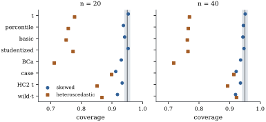

23.3 Bootstrap confidence intervals
A bootstrap distribution gives a confidence interval through its quantiles, in several ways. They agree to first order, which is all the consistency theorems guarantee, and differ in how fast their coverage approaches the nominal level.
Let
The nominal
(a) the percentile interval
(b) the basic interval
(c) the studentized (or bootstrap-
The basic interval translates the bootstrap idea
directly: if
23.3.1. First-order correctness
The consistency theorems translate into coverage through a lemma about quantiles.
Let
Proof. By Pólya’s theorem
Under the conditions of Theorem 23.1.4,
the percentile and basic intervals built from the
residual bootstrap have coverage probability tending to
Proof. Take
The same argument applies to the wild bootstrap under
the conditions of Theorem 23.2.2.
Since
23.3.2. Pivots and higher-order accuracy
The case for studentizing is clearest when the root is an exact pivot.
In the normal linear model with
(a)
(b)
Proof. Given the data,
The studentized root has the same distribution in
both worlds, so the bootstrap reproduces it exactly. The
unstudentized root depends on
BCa. Efron (1987) corrected the
percentile interval to the same order of accuracy
without a standard error. The bias-corrected and
accelerated (BCa) interval uses the percentile
interval at adjusted levels
23.3.3. An example and a simulation
Return to the state murder rates of Example (Poverty and murder rates),
with the District of Columbia omitted, and the
coefficient
| method | interval | length |
|---|---|---|
| residual bootstrap, percentile | ||
| residual bootstrap, basic | ||
| residual bootstrap, studentized | ||
| residual bootstrap, BCa | ||
| case bootstrap, percentile | ||
| wild bootstrap- |
The residual bootstrap used leverage-adjusted
residuals. The first four intervals agree closely: with
fifty states and a well-behaved fit, the classical
interval is hard to improve on. BCa is shifted down; its
bias correction
import numpy as np
import statsmodels.api as sm
from scipy import stats
data = sm.datasets.statecrime.load_pandas().data
data = data.drop(index="District of Columbia")
rng = np.random.default_rng(2303)
B = 9999
y = data["murder"].to_numpy()
X = np.column_stack([np.ones(len(y)), data[["poverty", "single", "urban"]]])
n, p = X.shape
XtX_inv = np.linalg.inv(X.T @ X)
A = XtX_inv @ X.T
a, c = A[1], np.sqrt(XtX_inv[1, 1]) # the poverty coefficient is a @ y
h = np.sum((X @ XtX_inv) * X, axis=1)
fit = X @ (A @ y)
e = y - fit
b = a @ y
s = np.sqrt(e @ e / (n - p))
q = [0.025, 0.975]
out = {"t": b + np.array([-1, 1]) * stats.t.ppf(0.975, n - p) * s * c}
r = e / np.sqrt(1 - h) # residual bootstrap, modified residuals
r -= r.mean()
Ystar = fit + r[rng.integers(0, n, size=(B, n))]
bstar = Ystar @ a
sstar = np.sqrt(np.sum((Ystar - (Ystar @ A.T) @ X.T) ** 2, axis=1) / (n - p))
tstar = (bstar - b) / (sstar * c)
lo, hi = np.quantile(bstar, q)
out["percentile"] = np.array([lo, hi])
out["basic"] = np.array([2 * b - hi, 2 * b - lo])
out["studentized"] = b - np.quantile(tstar, q[::-1]) * s * c
z0 = stats.norm.ppf(np.mean(bstar < b)) # BCa
loo = b - a * e / (1 - h) # case-jackknife values (heuristic with residual resampling)
dev = loo.mean() - loo
acc = np.sum(dev ** 3) / (6 * np.sum(dev ** 2) ** 1.5)
zs = z0 + stats.norm.ppf(q)
out["BCa"] = np.quantile(bstar, stats.norm.cdf(z0 + zs / (1 - acc * zs)))
idx = rng.integers(0, n, size=(B, n)) # case bootstrap
bcase = np.array([np.linalg.lstsq(X[i], y[i], rcond=None)[0][1] for i in idx])
out["case"] = np.quantile(bcase, q)
se2 = np.sqrt(np.sum(a ** 2 * e ** 2 / (1 - h))) # wild bootstrap-t with HC2
Ystar = fit + (e / np.sqrt(1 - h)) * rng.choice([-1.0, 1.0], size=(B, n))
Estar = Ystar - (Ystar @ A.T) @ X.T
wstar = (Ystar @ a - b) / np.sqrt((Estar ** 2 / (1 - h)) @ a ** 2)
out["wild-t"] = b - np.quantile(wstar, q[::-1]) * se2
for m, (l, u) in out.items():
print(f"{m:12s} ({l:.3f}, {u:.3f}) length {u - l:.3f}")One data set cannot show which interval is right. Figure 23.3.1 reports
coverages for the slope of a line, from

Three lessons stand out.
With constant variance, studentization is what matters. At
With heteroscedastic errors the classical
The robust methods improve with
import numpy as np
from scipy import stats
level = 0.95
lo_q, hi_q = (1 - level) / 2, (1 + level) / 2
beta = np.array([1.0, 1.0])
methods = ["t", "percentile", "basic", "studentized", "BCa", "case", "HC2 t", "wild-t"]
def make_design(n):
"""A skewed fixed design and the quantities every data set reuses."""
x = np.exp(0.5 * stats.norm.ppf((np.arange(1, n + 1) - 0.5) / n))
X = np.column_stack([np.ones(n), x])
XtX_inv = np.linalg.inv(X.T @ X)
A = XtX_inv @ X.T # beta_hat = A y
h = np.sum((X @ XtX_inv) * X, axis=1) # leverages
sd = x / np.sqrt(np.mean(x ** 2)) # heteroscedastic sd, mean square one
return dict(n=n, x=x, X=X, A=A, h=h, a=A[1], c=np.sqrt(XtX_inv[1, 1]), sd=sd)
def errors(rng, law, d):
if law == "skewed": # centred exponential, constant variance
return rng.exponential(size=d["n"]) - 1.0
return d["sd"] * rng.normal(size=d["n"]) # normal, sd proportional to x
def one_data_set(rng, law, d, B):
"""Return, for each method, whether its 95% interval covers the true slope."""
n, x, X, A, h, a, c = (d[k] for k in ("n", "x", "X", "A", "h", "a", "c"))
y = X @ beta + errors(rng, law, d)
b = a @ y
e = y - X @ (A @ y)
s = np.sqrt(e @ e / (n - 2))
cover = {"t": abs(b - beta[1]) <= stats.t.ppf(hi_q, n - 2) * s * c}
# residual bootstrap from leverage-adjusted, centred residuals
r = e / np.sqrt(1 - h)
r -= r.mean()
Ystar = X @ (A @ y) + r[rng.integers(0, n, size=(B, n))]
bstar = Ystar @ a
Estar = Ystar - (Ystar @ A.T) @ X.T
tstar = (bstar - b) / (np.sqrt(np.sum(Estar ** 2, axis=1) / (n - 2)) * c)
q_lo, q_hi = np.quantile(bstar, [lo_q, hi_q])
t_lo, t_hi = np.quantile(tstar, [lo_q, hi_q])
cover["percentile"] = q_lo <= beta[1] <= q_hi
cover["basic"] = 2 * b - q_hi <= beta[1] <= 2 * b - q_lo
cover["studentized"] = b - t_hi * s * c <= beta[1] <= b - t_lo * s * c
# BCa: residual-bootstrap bias correction, case-jackknife acceleration (a heuristic pairing)
z0 = stats.norm.ppf(np.clip(np.mean(bstar < b), 1 / B, 1 - 1 / B))
loo = b - a * e / (1 - h) # slopes with one case deleted
dev = loo.mean() - loo
acc = np.sum(dev ** 3) / (6 * np.sum(dev ** 2) ** 1.5)
zs = z0 + stats.norm.ppf([lo_q, hi_q])
bca_lo, bca_hi = np.quantile(bstar, stats.norm.cdf(z0 + zs / (1 - acc * zs)))
cover["BCa"] = bca_lo <= beta[1] <= bca_hi
# case bootstrap percentile
idx = rng.integers(0, n, size=(B, n))
xs, ys = x[idx], y[idx]
xc = xs - xs.mean(axis=1, keepdims=True)
sxx = np.sum(xc ** 2, axis=1)
ok = sxx > 1e-12 # drop the (rare) resamples with one distinct x
bcase = np.sum(xc[ok] * ys[ok], axis=1) / sxx[ok]
cl, ch = np.quantile(bcase, [lo_q, hi_q])
cover["case"] = cl <= beta[1] <= ch
# HC2 t interval, and the wild bootstrap-t studentized by HC2
se2 = np.sqrt(np.sum(a ** 2 * e ** 2 / (1 - h)))
cover["HC2 t"] = abs(b - beta[1]) <= stats.t.ppf(hi_q, n - 2) * se2
v = rng.choice([-1.0, 1.0], size=(B, n))
Ystar = X @ (A @ y) + (e / np.sqrt(1 - h)) * v
Estar = Ystar - (Ystar @ A.T) @ X.T
wstar = (Ystar @ a - b) / np.sqrt((Estar ** 2 / (1 - h)) @ a ** 2)
w_lo, w_hi = np.quantile(wstar, [lo_q, hi_q])
cover["wild-t"] = b - w_hi * se2 <= beta[1] <= b - w_lo * se2
return cover
def coverage(law, n, reps, B, seed):
rng = np.random.default_rng(seed)
d = make_design(n)
hits = {m: 0 for m in methods}
for _ in range(reps):
for m, ok in one_data_set(rng, law, d, B).items():
hits[m] += ok
return {m: hits[m] / reps for m in methods}
for law in ["skewed", "heteroscedastic"]:
cov = coverage(law, n=20, reps=200, B=499, seed=2331)
print(f"{law:16s}" + " ".join(f"{m} {v:.2f}" for m, v in cov.items()))With
23.3.4. Bootstrap tests of a linear hypothesis
A test of
23.3.5. Exercises
A. Check your understanding
Show that the percentile and basic intervals coincide
when the bootstrap distribution of
Solution. Symmetry about
B. Practice
Suppose there is a strictly increasing
Solution. Let
Show that the jackknife values used in the BCa
acceleration satisfy
C. Going deeper
The coverage of a bootstrap interval can itself be
estimated by a second level of bootstrapping: treat each
first-level resample as data, and ask how often its
interval covers